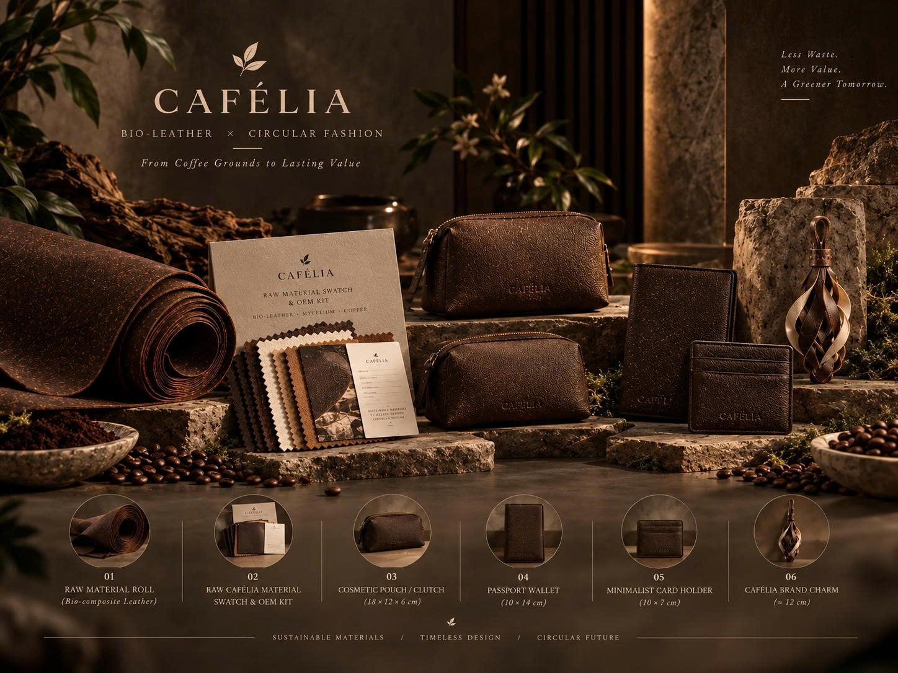
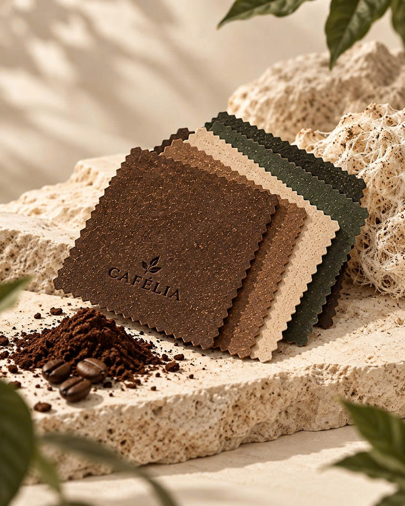
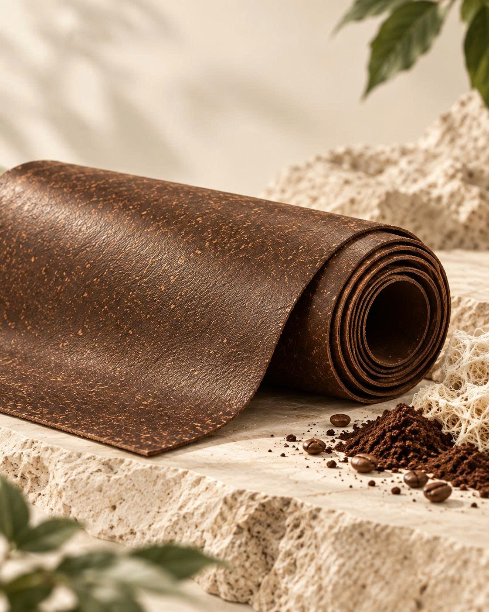

Collect & prepare
Spent coffee grounds are collected, screened, decontaminated, dried and homogenized.

CAFÉLIA is built around an integrated value chain that connects bio-composite material supply with refined, minimalist accessories.
The material concept combines processed coffee grounds, a natural mycelium network, organic canvas or cotton reinforcement, bio-based binders and a protective surface layer.

Each piece is presented with the visual clarity of the project portfolio: large imagery, restrained type and an unmistakable price panel.
The project’s technical flow moves from spent coffee grounds through controlled biological cultivation, material forming, finishing and accessory production.
Spent coffee grounds are collected, screened, decontaminated, dried and homogenized.
The substrate is blended, moisture-adjusted and treated under controlled high-pressure sterilization.
A Pleurotus mycelium network is inoculated and cultivated under controlled conditions.
Biological activity is stopped, then the composite is hydraulically heat-pressed and surface-finished.
CO₂ laser cutting, industrial sewing, CNC embroidery, edge painting and QC turn material into finished pieces.
Qualified offcuts from pattern cutting can be redirected into the CAFÉLIA Brand Charm line, reinforcing the project’s zero-waste direction.
The ESG model in the project combines environmental responsibility, social development and governance controls, supported by an anti-greenwashing pathway.
Recover coffee by-products, reduce reliance on petroleum-based polymers and pursue circular material use.
Build skilled local employment, strengthen safe working practices and develop technical capability.
Use transparent claims, independent testing and structured documentation to support responsible communication.
The proposed manufacturing facility is located in Tan Phu Trung Industrial Park, National Highway 22, Tan Phu Trung Commune, Cu Chi District, Ho Chi Minh City.
